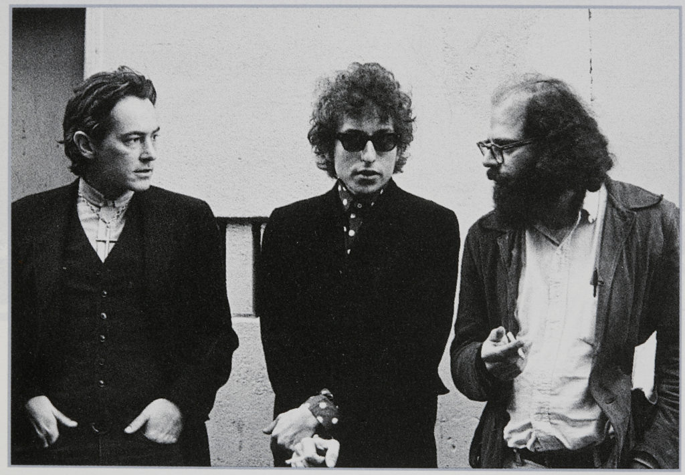

Термін «бітники» було запропоновано 1958 року журналістом «Сан-Франциско кронікл[en]» Гербом Кейном[en], ґрунтуючись на тодішніх уявленнях американців про типовий для середини XX століття пласт молоді, що характеризувався асоціальною поведінкою та неприйняттям традиційних культурних цінностей нації.
Джек Керуак (1922—1969), більшістю критиків вважається однією з найважливіших фігур біт-покоління, згадував у своїй публіцистичній статті 1959 року, що «розбите покоління» (англ. beat generation) було вперше згадане ним 1948 року в бесіді з Джоном Голмзом[en]. Так Керуак охарактеризував соціальний пласт, що виник після практично зниклого до 1948 року «втраченого покоління» учасників Першої світової війни. Примітно, що саме слово «бітник» придумав не Керуак. Як зауважує в своїй книзі про біт-культуру Вільям Ловлор, воно з'явилось лише десять років по тому. Колумніст-оглядач газети «Сан-Франциско кронікл» Герб Кейн[en], описуючи у випуску від 2 квітня 1958 року проведену на Північному пляжі Сан-Франциско велику вечірку осіб характерного вигляду та поведінки, приєднав до слова «beat» російський наросток «-ник» (-nik) від назви радянського «Супутника-1», запущеного в жовтні 1957.
Низка критиків зауважує, що безпосередньо в розумінні Кейна, який сформував термін, він служив для позначення бородатих, узутих у сандалі молодих хлопців — ледарів, що валандаються кав'ярнями, та любителів джазу. Термін «бітник» не мав позитивного забарвлення і був словом принизливим, насмішкою — так називали необізнаних конформістів, тих, чий бундючний бунт був ширмою для модної антиамериканської дурості. З іншого боку, на думку авторів книги «Американські ікони» (1997), спершу термін «бітник» конкретного значення не мав і використовувався для позначення будь-яких людей, яким-небудь чином пов'язаних із різношерстим нью-йоркським середовищем. Через роки термін зазнав значних змін і до кінця 50-х став позначати цілий культурний пласт — молодих хлопців, що демонстрували слабку зацікавленість до життя «американською мрією» — з новим будинком, машиною та роботою в якійсь великій корпорації. Факт еволюції терміна також підтверджує Чарлз Віллз, у книзі «Америка 1950-х» він дав уже нове, відмінне від вищевказаного визначення «бітника» — він зазначав, що зазнавши видозміни від «асоціальності» до «дивацтва», стиль життя типового представника біт-покоління відповідно змінив і саме ставлення до останнього — до кінця 50-х, за твердженнями Віллза, під словом «бітник» почали розуміти молодого хлопця в чорному светрі з високим коміром і з беретом на голові, який тиняється в районі пошарпаних кафешок і грає на бонго.
«Класичним» образом бітника є довговолосий бородань у латаних штанях, що обожнює джазову музику, захоплюється літературою та філософією, мандрує дорогами Америки, вживає наркотики, користується спеціальним жаргоном. Бітники ставили собі за мету епатувати суспільство поміркованих. К. Голмс, один з представників цього літературного напрямку, пояснював: "Бути бітником означає усвідомлювати свою самотність та вважати її нормою"
Найширше представництво бітники мали серед письменників і поетів — трьома ж людьми, що стояли біля витоків бітництва, вважаються Люсьєн Карр[en] (названий виданням «Нью-Йорк Меґезін» батьком-засновником руху), Аллен Гінзберґ (ідеолог руху, званий одним із найвідоміших американських поетів другої половини XX століття) та Джек Керуак (званий «каталізатором контркультури 60-х» і розглядуваний критиками як один із найвпливовіших американських письменників). Дещо пізніше до трійки долучився близький друг Гінзберга, письменник Вільям Берроуз, який в скорім часі відіграв важливу роль в історії становлення бітництва й надалі затьмарив собою славу Карря, перейнявши титул «хресного батька» всього руху. Саме троє згаданих — Керуак, Гінзберг і Берроуз дуже швидко стали людьми, з іменами яких асоціюється біт-покоління та слово «бітник» зокрема.